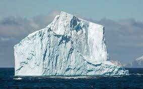

Over mij
Mijn naam is Thijs Mathissen. Ik ben 15 jaar oud.
Ik zit op de middelbare school:Grotius en ik zit in 4de leerjaar.
Mijn hobbies zijn: badminton, saxofoon spelen en gamen.
De games die ik speel zijn: genshin impact, super smash bros ulimate, minecraft en TF2.
